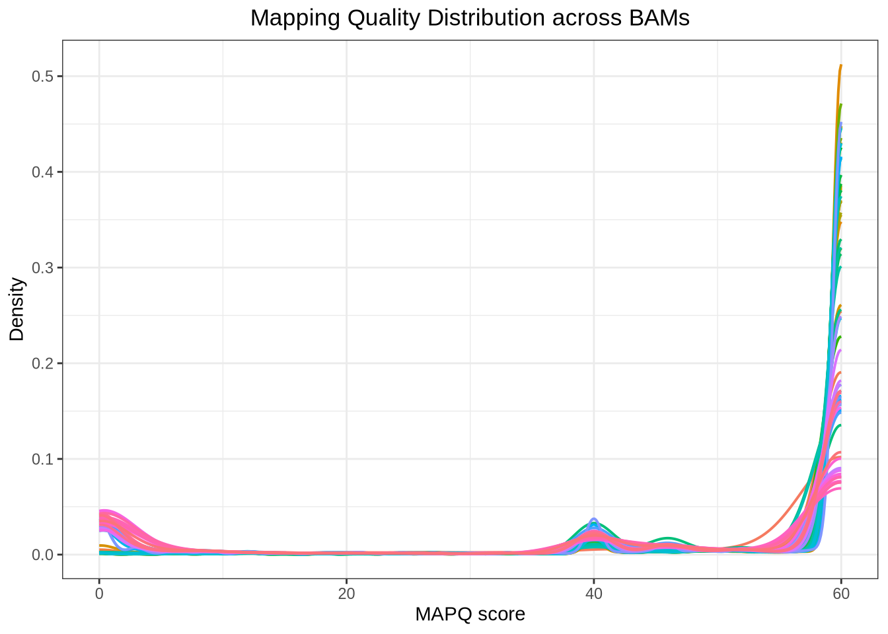
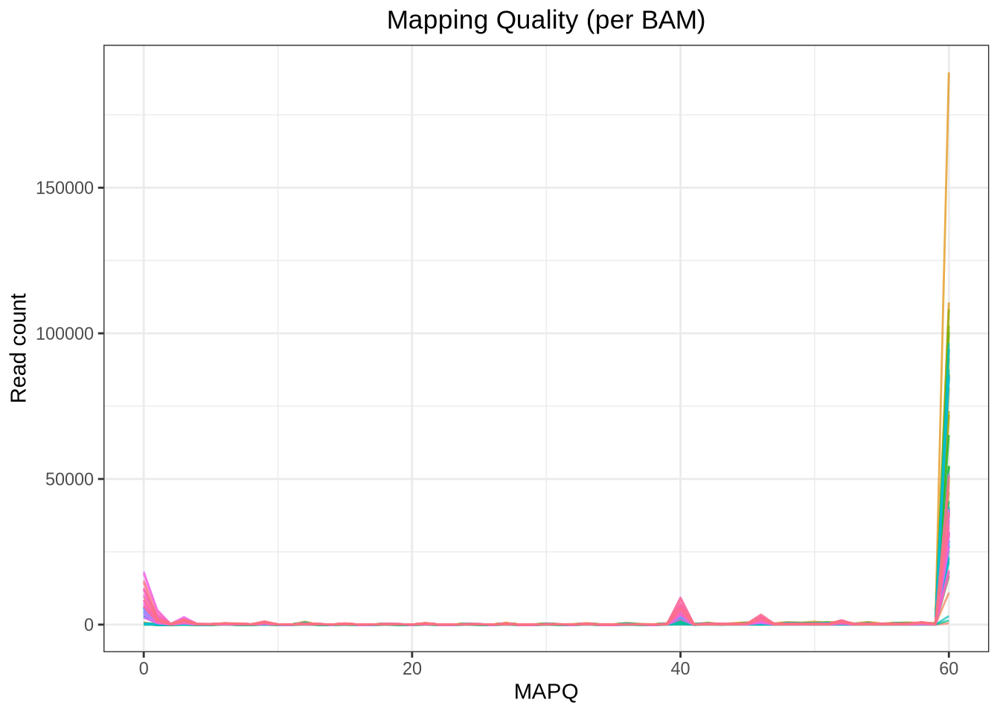

Figure: FastQC per-base quality plot
Figure: FastQC per-base quality plot Figure: MultiQC Summary (after running MultiQC on FastQC results)
Figure: MultiQC Summary (after running MultiQC on FastQC results)
Code
# Load required packages
suppressPackageStartupMessages({
library(Rsamtools)
library(ggplot2)
library(dplyr)
})
# Set working directory to BAM folder
setwd("/home/tahirali/RAMSES_mount/tali/qbio/Practical_Day_1/mapping")
# Get list of all BAM files in the directory
bam_files <- list.files(pattern = "\\.bam$", full.names = TRUE)
# Function to extract MAPQ from BAM
get_mapq <- function(bamfile) {
param <- ScanBamParam(what = "mapq")
aln <- scanBam(bamfile, param = param)[[1]]
data.frame(MAPQ = aln$mapq, Sample = basename(bamfile))
}
# Extract MAPQ for all BAMs
mapq_list <- lapply(bam_files, get_mapq)
mapq_df <- bind_rows(mapq_list)
# Clean: remove NA
mapq_df <- mapq_df %>% filter(!is.na(MAPQ), MAPQ >= 0)
# Density plot across BAMs
ggplot(mapq_df, aes(x = MAPQ, color = Sample)) +
geom_density(size = 0.7, alpha = 0.5) +
theme_bw() +
theme(
plot.title = element_text(hjust = 0.5), # center title
legend.position = "none"
) +
labs(
title = "Mapping Quality Distribution across BAMs",
x = "MAPQ score", y = "Density"
)
Code
# line plot of MAPQ counts per BAM
mapq_summary <- mapq_df %>%
group_by(Sample, MAPQ) %>%
summarise(Count = n(), .groups = "drop")
ggplot(mapq_summary, aes(x = MAPQ, y = Count, color = Sample)) +
geom_line(alpha = 0.7) +
theme_bw() +
theme(
plot.title = element_text(hjust = 0.5), # center title
legend.position = "none"
) +
labs(
title = "Mapping Quality (per BAM)",
x = "MAPQ", y = "Read count"
)
Code
# Summarise mapping quality categories per BAM
mapq_stats <- mapq_df %>%
group_by(Sample) %>%
summarise(
Total_Reads = n(),
MAPQ_0 = sum(MAPQ == 0),
MAPQ_40 = sum(MAPQ == 40),
MAPQ_60 = sum(MAPQ == 60),
High_Quality = sum(MAPQ >= 30),
.groups = "drop"
) %>%
mutate(
Pct_MAPQ_0 = round(100 * MAPQ_0 / Total_Reads, 2),
Pct_MAPQ_40 = round(100 * MAPQ_40 / Total_Reads, 2),
Pct_MAPQ_60 = round(100 * MAPQ_60 / Total_Reads, 2),
Pct_HighQ = round(100 * High_Quality / Total_Reads, 2)
)
mapq_stats# A tibble: 76 × 10
Sample Total_Reads MAPQ_0 MAPQ_40 MAPQ_60 High_Quality Pct_MAPQ_0 Pct_MAPQ_40
<chr> <int> <int> <int> <int> <int> <dbl> <dbl>
1 SRR19… 46464 351 1578 37250 43817 0.76 3.4
2 SRR19… 552 6 16 444 517 1.09 2.9
3 SRR19… 13886 122 463 10940 13001 0.88 3.33
4 SRR19… 46814 714 2242 38471 44272 1.53 4.79
5 SRR19… 99536 283 3079 85575 95817 0.28 3.09
6 SRR19… 58504 318 2171 50009 56529 0.54 3.71
7 SRR19… 215983 512 6092 189581 210189 0.24 2.82
8 SRR19… 127704 448 4269 110560 123877 0.35 3.34
9 SRR19… 108071 2873 5878 86237 101018 2.66 5.44
10 SRR19… 95490 363 3475 81489 92226 0.38 3.64
# ℹ 66 more rows
# ℹ 2 more variables: Pct_MAPQ_60 <dbl>, Pct_HighQ <dbl>Code
# Overall summary across all BAMs
mapq_overall <- mapq_df %>%
summarise(
Total_Reads = n(),
MAPQ_0 = sum(MAPQ == 0),
MAPQ_40 = sum(MAPQ == 40),
MAPQ_60 = sum(MAPQ == 60),
High_Quality = sum(MAPQ >= 30)
) %>%
mutate(
Pct_MAPQ_0 = round(100 * MAPQ_0 / Total_Reads, 2),
Pct_MAPQ_40 = round(100 * MAPQ_40 / Total_Reads, 2),
Pct_MAPQ_60 = round(100 * MAPQ_60 / Total_Reads, 2),
Pct_HighQ = round(100 * High_Quality / Total_Reads, 2)
)
mapq_overall Total_Reads MAPQ_0 MAPQ_40 MAPQ_60 High_Quality Pct_MAPQ_0 Pct_MAPQ_40
1 4897097 281284 276177 3619254 4332374 5.74 5.64
Pct_MAPQ_60 Pct_HighQ
1 73.91 88.47